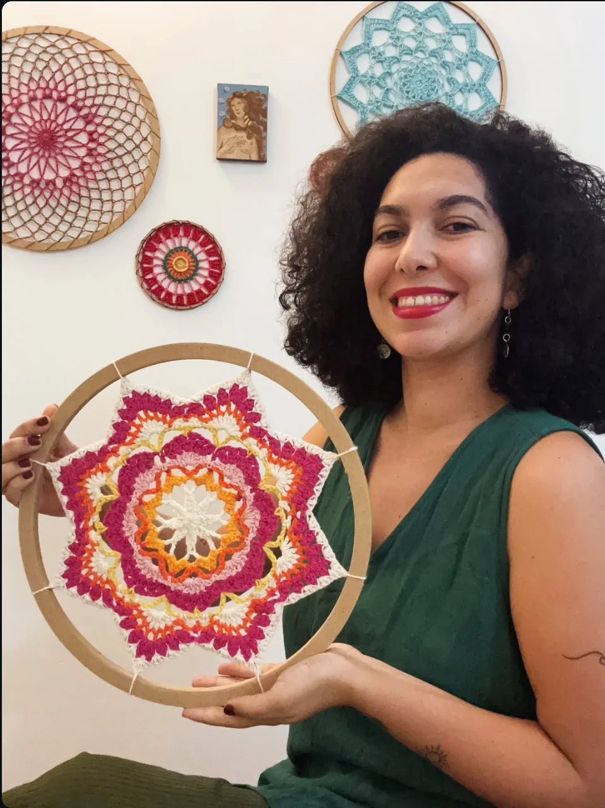
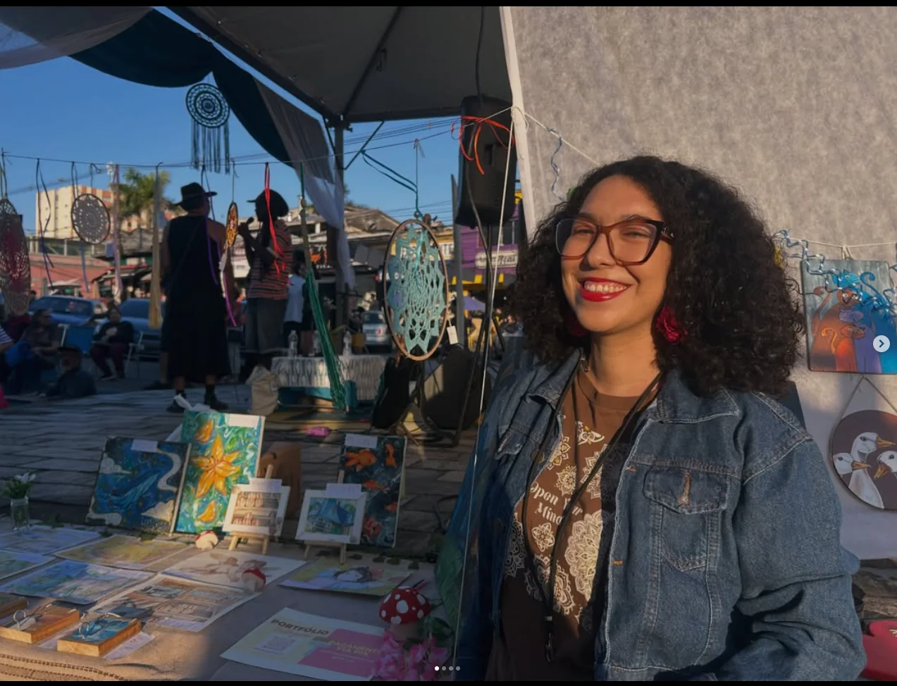

Entre fios, arte e conexão.
Mandalas de crochê sob encomenda e oficinas para criar, experimentar e se conectar com a arte.

um fio de cada vez

Sobre mim
Meu lugar é onde a arte e a conexão se encontram.
Sou a Mari, artista e artesã. Encontrei no crochê uma forma de me conectar comigo mesma. Com o tempo, as mandalas ganharam um lugar especial no meu trabalho, unindo criação, contemplação e espiritualidade.
Criar também é uma forma de desacelerar, experimentar e descobrir novos caminhos de expressão. Para mim, cada mandala é uma espécie de meditação ativa: uma maneira de transformar essa conexão interior em fios, cores e formas.
Além das minhas criações e encomendas, participo de feiras e coletivos e facilito oficinas de crochê, voluntárias e particulares. Acredito na arte como experiência, troca e descoberta. Meu trabalho está tanto nas peças que faço quanto nos encontros que a criação torna possíveis.
Meu processo criativo
Cada mandala nasce de escolhas, experimentações e combinações de cores e formas. Entre um ponto e outro, a peça encontra sua própria identidade.
Nos vídeos, compartilho um pouco desse caminho: os fios, as mãos em movimento, os detalhes e as descobertas de cada criação.
Criações feitas de fios, cores e ideias.
Cada peça nasce de uma combinação própria de cores e formas. Conheça as mandalas autorais ou imagine comigo uma criação sob encomenda.
Monte sua mandala
Escolha as cores de cada parte e veja sua combinação ganhar forma. Quando encontrar uma que tenha a sua cara, fale comigo sobre a encomenda.
Oficinas para criar e experimentar.
As oficinas são um convite para se aproximar do crochê, explorar cores e formas e descobrir, no seu tempo, o que as mãos podem criar. Há encontros voluntários e oficinas particulares; não é preciso ter experiência.
Quero saber das próximasVamos conversar?
Quer encomendar uma mandala, conhecer as oficinas ou conversar sobre meu trabalho? Vai ser bom trocar essa ideia com você.
Os links de contato ainda não foram configurados.